פשוט להצליח במתמטיקה › כל הנושאים › טריגונומטריה במרחב
טריגונומטריה במרחב – סרטוני הסבר ותרגול
41 סרטוני הסבר ותרגול בנושא טריגונומטריה במרחב – לשאלון 372, שאלון 472. כל נושא מוסבר מהקל אל הקשה: קודם הרעיון, אחר כך תרגילים, ובסוף שאלות בסגנון בגרות. הכול בחינם, בשיטת "פשוט להצליח".
רוצים לעקוב אחרי ההתקדמות?נרשמים בחינם, וכל סרטון שראיתם מסומן ✓. ממשיכים מכל מכשיר.
הצטרפות בחינם ←טריגונומטריה במרחב – שאלון 372 כל הנושאים של שאלון 372 ←
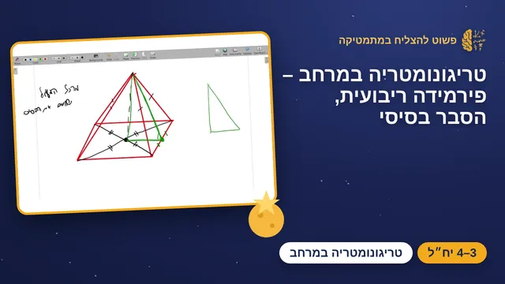
טריגונומטריה במרחב – פירמידה ריבועית, הסבר בסיסי טריגונומטריה במרחב – פירמידה משולשת ישרה
טריגונומטריה במרחב – פירמידה משולשת ישרהטריגונומטריה במרחב – שאלון 472 כל הנושאים של שאלון 472 ←
טריגונומטריה במרחב – פירמידה ריבועית, הסבר בסיסיטריגונומטריה במרחב – פירמידה משולשת ישרה טריגו במרחב – רק לראות ולהבין (ללא קול) 482
טריגו במרחב – רק לראות ולהבין (ללא קול) 482 טריגו במרחב שאלות טובות ומסכמות 1
טריגו במרחב שאלות טובות ומסכמות 1 טריגו במרחב שאלות טובות ומסכמות 2
טריגו במרחב שאלות טובות ומסכמות 2 טריגו במרחב שאלות בגרות 482 2
טריגו במרחב שאלות בגרות 482 2 טריגו במרחב שאלות בגרות 482 3
טריגו במרחב שאלות בגרות 482 3 טריגו במרחב מהבסיס עד רמת בגרות שאלון 482 – 10
טריגו במרחב מהבסיס עד רמת בגרות שאלון 482 – 10 טריגו במרחב מהבסיס עד רמת בגרות שאלון 482 – 11
טריגו במרחב מהבסיס עד רמת בגרות שאלון 482 – 11 טריגו במרחב מהבסיס עד רמת בגרות שאלון 482 – 12
טריגו במרחב מהבסיס עד רמת בגרות שאלון 482 – 12 טריגו במרחב מהבסיס עד רמת בגרות שאלון 482 – 4
טריגו במרחב מהבסיס עד רמת בגרות שאלון 482 – 4 טריגו במרחב מהבסיס עד רמת בגרות שאלון 482 – 3
טריגו במרחב מהבסיס עד רמת בגרות שאלון 482 – 3 טריגו במרחב מהבסיס עד רמת בגרות שאלון 482 – 2
טריגו במרחב מהבסיס עד רמת בגרות שאלון 482 – 2 פירמידה שהבסיס שלה משולש – תרגילים לדוגמה 482 2
פירמידה שהבסיס שלה משולש – תרגילים לדוגמה 482 2 טריגונומטריה – תיבה עם פרמטר: להביע צלעות ב-x 4 יח
טריגונומטריה – תיבה עם פרמטר: להביע צלעות ב-x 4 יח טריגונומטריה במרחב פירמידה – שאלה חשמל 482 4 יח
טריגונומטריה במרחב פירמידה – שאלה חשמל 482 4 יח טריגונומטריה במרחב תרגילי התחלה – מנסרה משולשת, תרגיל קשה יותר 2
טריגונומטריה במרחב תרגילי התחלה – מנסרה משולשת, תרגיל קשה יותר 2 טריגונומטריה במרחב תרגילי התחלה – מנסרה משולשת, תרגיל לדוגמה
טריגונומטריה במרחב תרגילי התחלה – מנסרה משולשת, תרגיל לדוגמה טריגונומטריה במרחב תרגילי התחלה – מנסרה משולשת
טריגונומטריה במרחב תרגילי התחלה – מנסרה משולשת טריגונומטריה במרחב תרגילי התחלה – תיבה, תרגיל 3
טריגונומטריה במרחב תרגילי התחלה – תיבה, תרגיל 3 טריגונומטריה במרחב תרגילי התחלה – תיבה, תרגיל 2
טריגונומטריה במרחב תרגילי התחלה – תיבה, תרגיל 2 טריגונומטריה במרחב תרגילי התחלה – תיבה 4 יח 482
טריגונומטריה במרחב תרגילי התחלה – תיבה 4 יח 482 טריגונומטריה במרחב שאלת בגרות 4 יח 482 805 – תיבהטריגו במרחב – שאלה ברמה גבוהה 482 תיבהטריגו במרחב פירמידה 482 – שאלת בגרות 2015 מועד בחורף 2017 שאלה 2 – טריגו במרחב 482קיץ 2022 מועד ב – טריגו במרחב שאלה 2 482
טריגונומטריה במרחב שאלת בגרות 4 יח 482 805 – תיבהטריגו במרחב – שאלה ברמה גבוהה 482 תיבהטריגו במרחב פירמידה 482 – שאלת בגרות 2015 מועד בחורף 2017 שאלה 2 – טריגו במרחב 482קיץ 2022 מועד ב – טריגו במרחב שאלה 2 482 חורף 2022 מועד א – טריגו במרחב שאלה 2 482
חורף 2022 מועד א – טריגו במרחב שאלה 2 482
טריגונומטריה במרחב – פירמידה משולשת ישרהטריגו במרחב – רק לראות ולהבין (ללא קול) 482טריגו במרחב שאלות טובות ומסכמות 1טריגו במרחב שאלות טובות ומסכמות 2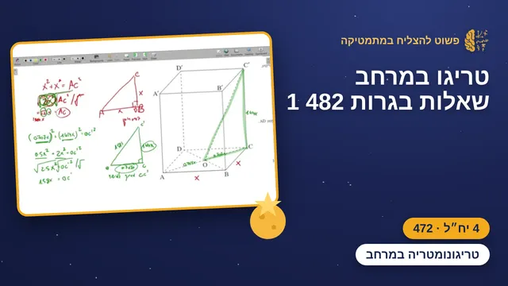
טריגו במרחב שאלות בגרות 482 1טריגו במרחב שאלות בגרות 482 2טריגו במרחב שאלות בגרות 482 3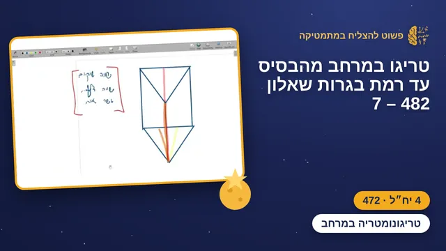
טריגו במרחב מהבסיס עד רמת בגרות שאלון 482 – 7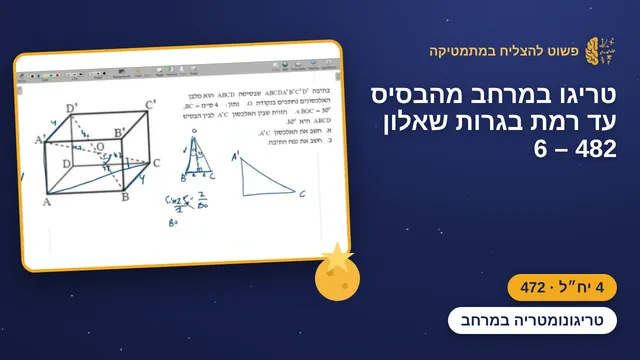
טריגו במרחב מהבסיס עד רמת בגרות שאלון 482 – 6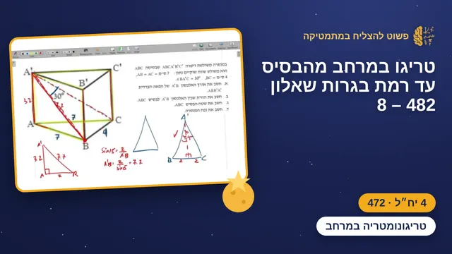
טריגו במרחב מהבסיס עד רמת בגרות שאלון 482 – 8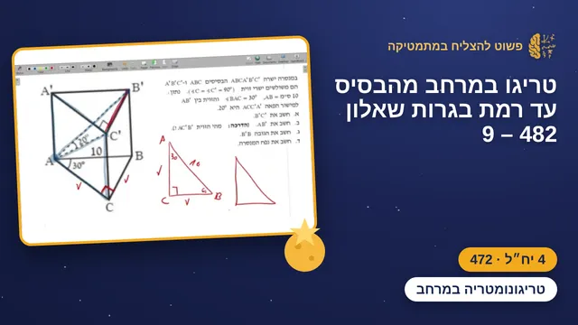
טריגו במרחב מהבסיס עד רמת בגרות שאלון 482 – 9טריגו במרחב מהבסיס עד רמת בגרות שאלון 482 – 10טריגו במרחב מהבסיס עד רמת בגרות שאלון 482 – 11טריגו במרחב מהבסיס עד רמת בגרות שאלון 482 – 12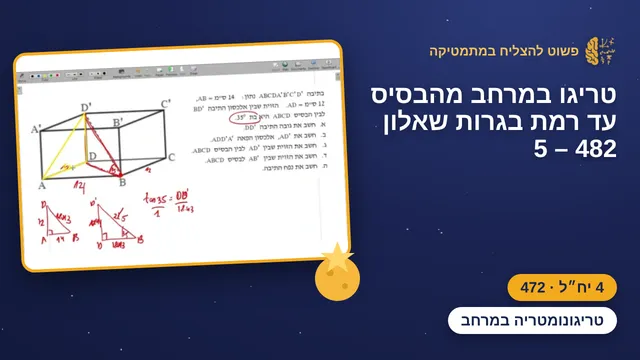
טריגו במרחב מהבסיס עד רמת בגרות שאלון 482 – 5טריגו במרחב מהבסיס עד רמת בגרות שאלון 482 – 4טריגו במרחב מהבסיס עד רמת בגרות שאלון 482 – 3טריגו במרחב מהבסיס עד רמת בגרות שאלון 482 – 2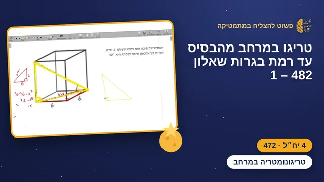
טריגו במרחב מהבסיס עד רמת בגרות שאלון 482 – 1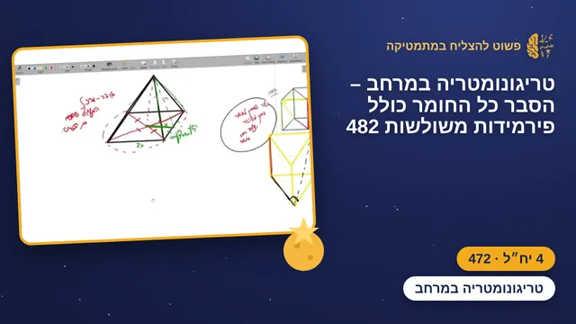
טריגונומטריה במרחב – הסבר כל החומר כולל פירמידות משולשות 482פירמידה שהבסיס שלה משולש – תרגילים לדוגמה 482 2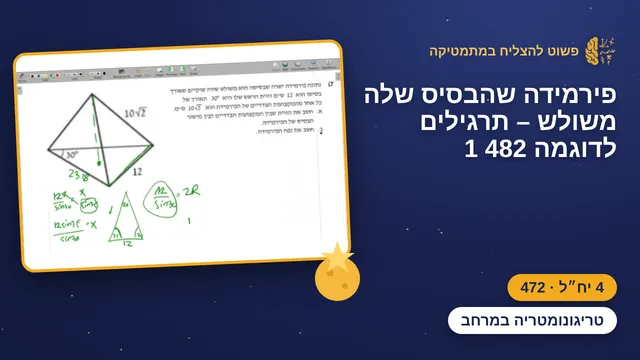
פירמידה שהבסיס שלה משולש – תרגילים לדוגמה 482 1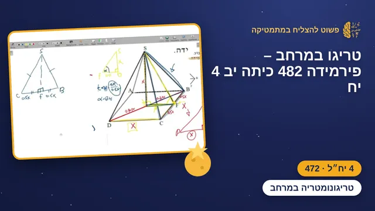
טריגו במרחב – פירמידה 482 כיתה יב 4 יח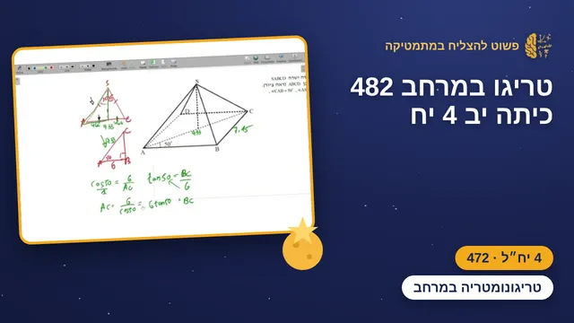
טריגו במרחב 482 כיתה יב 4 יחטריגונומטריה – תיבה עם פרמטר: להביע צלעות ב-x 4 יח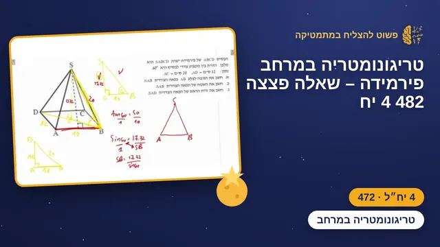
טריגונומטריה במרחב פירמידה – שאלה פצצה 482 4 יחטריגונומטריה במרחב פירמידה – שאלה חשמל 482 4 יח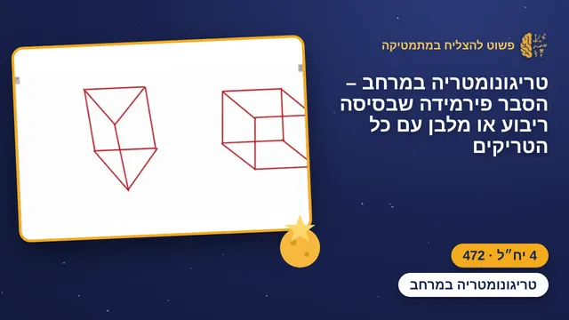
טריגונומטריה במרחב – הסבר פירמידה שבסיסה ריבוע או מלבן עם כל הטריקיםטריגונומטריה במרחב תרגילי התחלה – מנסרה משולשת, תרגיל קשה יותר 2טריגונומטריה במרחב תרגילי התחלה – מנסרה משולשת, תרגיל לדוגמהטריגונומטריה במרחב תרגילי התחלה – מנסרה משולשתטריגונומטריה במרחב תרגילי התחלה – תיבה, תרגיל 3טריגונומטריה במרחב תרגילי התחלה – תיבה, תרגיל 2טריגונומטריה במרחב תרגילי התחלה – תיבה 4 יח 482טריגונומטריה במרחב שאלת בגרות 4 יח 482 805 – תיבהטריגו במרחב – שאלה ברמה גבוהה 482 תיבהטריגו במרחב פירמידה 482 – שאלת בגרות 2015 מועד בחורף 2017 שאלה 2 – טריגו במרחב 482קיץ 2022 מועד ב – טריגו במרחב שאלה 2 482חורף 2022 מועד א – טריגו במרחב שאלה 2 482